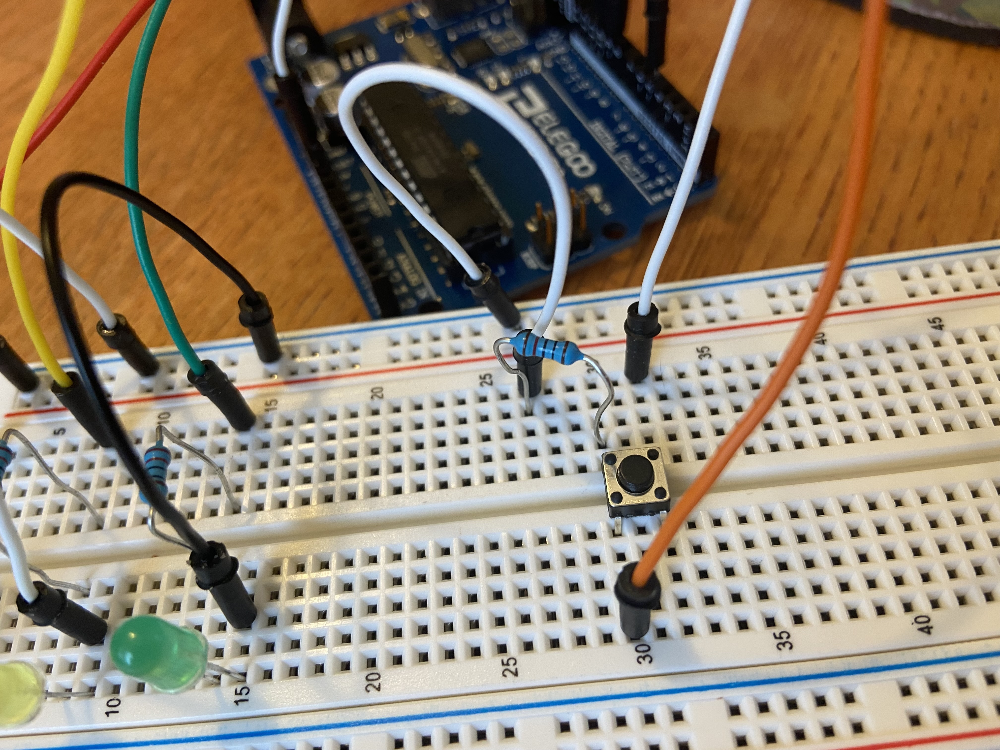
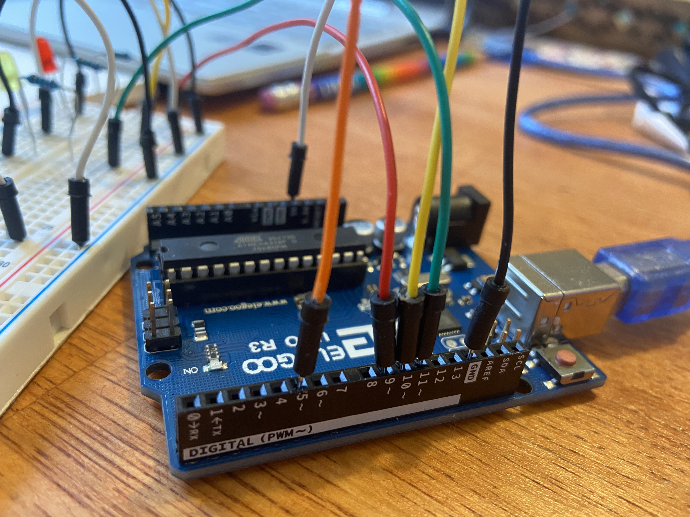
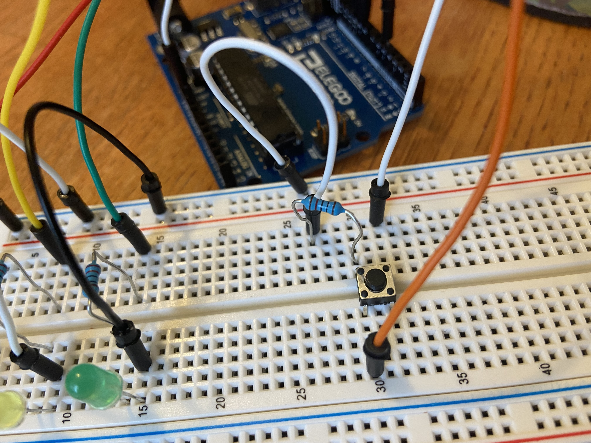
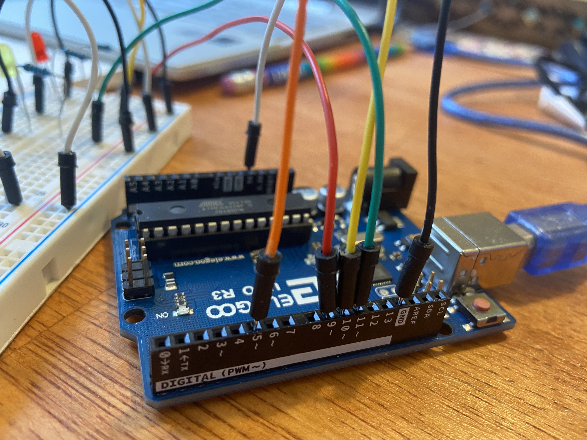
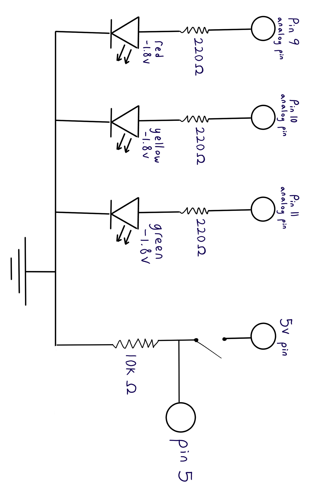

Sydney's Assignment 2 - Fade (Stoplight)!
For this assignment, I created a circuit of a red, yellow and green LED each blinking in a unique pattern. The user can switch which light is on by pressing a button.
 



For the LEDs, I created circuits starting from analog pins 9-11, going through 220Ω resistors, red, yellow and green LEDs, and going to ground.
For the button, I created a circuit starting from the 5V pin, going through the button, and going to pin 5 as OUTPUT and a 10kΩ resistor to ground.

A schematic of the circuit is shown above.
For the button, I chose to use a 10kΩ resistor to ensure that current has a path to ground after the button switch is opened. There isn't a specific caluclation or amount of resistance needed, but a high resistance simply helps create a path for current.
If the circuit doesn't have a resistor between the OUTPUT pin and ground after it's disconnected from power, the electrons won't dissipate automatically and could cause weird readings at the OUTPUT pin.
For the LEDs, I chose to use 220Ω resistors to keep the current below the 20 mA (.02A) limit of the LEDs.
The pins send out 5V when on HIGH, and the red, yellow and green LEDs cause a 1.8V drop. I calculated the resistance to use based on Ohm's law (V = I*R).
3.2V / .02A = [x]Ω
x = 160
The calculated resistance is 160Ω. I chose to use 220Ω, because it was the next highest value of the resistors I had, and a higher resistance would put the current a little bit lower than the limit.
My code has two sections; one for reading states from the button to switch between LEDs, and the other for giving each LED unique blinking/fading behavior.
For the button, I used digitalRead(button) , a while loop, and state-tracking variables to switch between states 1, 2 and 3 when the button is pressed.
For the LEDs (red = state 1, yellow = state 2, green = state 3), I used analogWrite() for red and yellow, and digitalWrite() for green.
I made the red LED blink between a brighter and dimmer state, the yellow LED fade between bright and dim, and the green LED simply turn on/off. The
Another coding challenge I has was not being able to press the button while the light behavior loops were running.
To address this, I divided up the behavior of the red and yellow lights into for loops, where an if statement could check if the button was pressed while the loop was running.
This allowed me to be able to press the button and change the light state even if the light behavior was in the middle of running.
// this code draws from the Button example code
// set variable names for the led and button pins
const int red = 9;
const int yellow = 10;
const int green = 11;
const int button = 5;
// varibale to keep track of pressing button
int state = 1;
int refState = 1;
void setup() {
// set analog pins 9-11 to INPUT for the 3 LEDS
pinMode(red, INPUT);
pinMode(yellow, INPUT);
pinMode(green, INPUT);
// set pin 5 to OUTPUT to check for button press
pinMode(button, OUTPUT);
//Initiate Serial communication to see variables for debugging
Serial.begin(9600);
}
void loop() {
//print button state for debugging
Serial.println(state);
// part 1: get state number 1,2,3 (red, yellow, green) when the button is pressed
// while loop - keep track while the buttton is pressed that the state loops between 1,2,3 (color states)
while(digitalRead(button) == HIGH){
//turn off lights
analogWrite(red, 0);
analogWrite(yellow, 0);
digitalWrite(green, LOW);
// test if refState less than 3 to increase the state by 1
if (refState < 3){
state = refState + 1;
}
// otherwise, if refState is already at 3 reset to 1
else{
state = 1;
}
}
// set refState +1 for next cycle after button is depressed
refState = state;
// part 2: behavior for red, yellow and green light
// test if state = 1 to run red light behavior
if (state == 1){
//turn off yellow
analogWrite(yellow, 0);
//turn off green
digitalWrite(green, LOW);
// use analogWrite to blink light brighter (200)
analogWrite(red, 200);
// .5 second delay
for (int i = 0; i < 10; i++){
//if statement test if the button is pressed while the loop is running, so you can exit the loop if the button is pressed
if (digitalRead(button) == LOW){
delay(50);
}
}
// use analogWrite to dim light
analogWrite(red, 10);
// .5 second delay
for (int i = 0; i < 10; i++){
//if statement test if the button is pressed while the loop is running, so you can exit the loop if the button is pressed
if (digitalRead(button) == LOW){
delay(50);
}
}
}
// test if state = 2 to run yellow light behavior
else if (state == 2){
//turn off red
analogWrite(red, 0);
//turn off green
digitalWrite(green, LOW);
// for loop to gradually increase brightness (1-200) with analogWrite
for (int i = 1; i <= 200; i++){
//if statement test if the button is pressed while the loop is running, so you can exit the loop if the button is pressed
if (digitalRead(button) == LOW){
analogWrite(yellow, i);
delay(5); // .005 sec delay between each state
}
}
// for loop to gradually decrease brightness (200-0) with analogWrite
for (int i = 200; i >= 1; i--){
//if statement test if the button is pressed while the loop is running, so you can exit the loop if the button is pressed
if (digitalRead(button) == LOW){
analogWrite(yellow, i);
delay(5); // .005 sec delay between each state
}
}
}
// test if state = 3 to run green light behavior
else if (state == 3){
//turn off red
analogWrite(red, 0);
//turn off yellow
analogWrite(yellow, 0);
// use digitalWrite to turn on green
digitalWrite(green, HIGH);
}
}
The function of the circuit and code is shown in the following GIF.